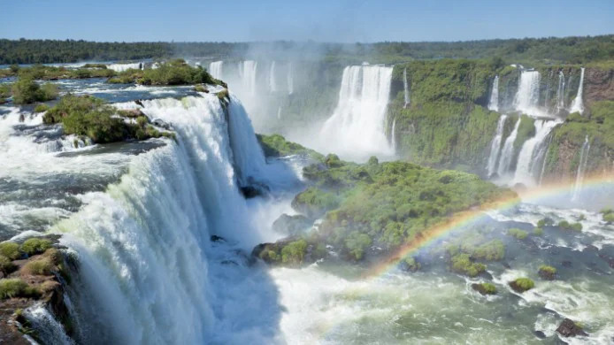
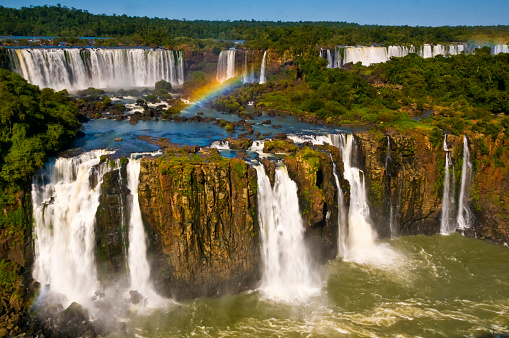
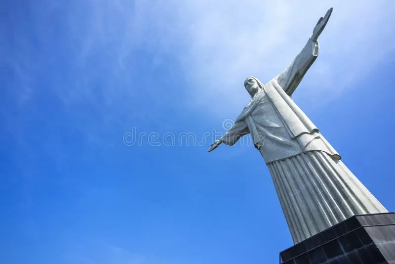
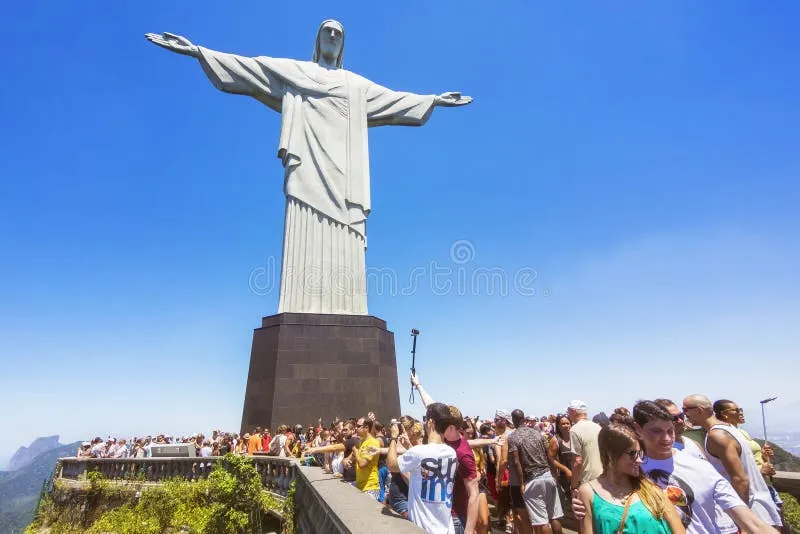
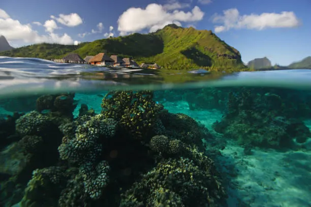
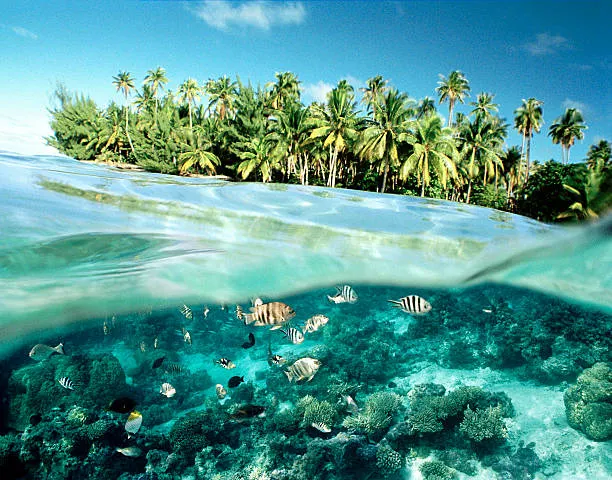

| Lugar | Imagen | Antecedentes | |
|---|---|---|---|
| argentina es uno de los lugares turisticos ademas de su gastronomia su cascada |
 |
 |
More information |
| Sobre una colina de la pequeña ciudad sureña de Encantado, en Río Grande del Sur, la cabeza y los brazos extendidos de un enorme monumento a Cristo se imponen sobre el horizonte de Brasil. Es una nueva estatua llamada Cristo Protector, que con sus 43 metros de altura sobre su pedestal superará en altura al icónico Cristo Redentor de Río de Janeiro, de 38 metros de altura. |  |
 |
More information |
| Tahití es la isla principal de la Polinesia Francesa y está ubicada en el Pacífico Sur. El paisaje salvaje es resultado de la erupción de un volcán ya extinto, situado en el centro de la isla, el monte Orohena. Es famosa por sus playas de arena negra donde se practica surf todo el año como las de Teahupoo. Éstas están franqueadas a un lado por grandes montañas de verdor intenso y al otro, por una laguna limitada por el arrecife de coral. |  |
 |
More information |